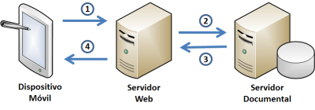

<!DOCTYPE html>
<html class="writer-html5" lang="en" >
<head>
    <meta charset="utf-8" />
    <meta http-equiv="X-UA-Compatible" content="IE=edge" />
    <meta name="viewport" content="width=device-width, initial-scale=1.0" />
      <link rel="shortcut icon" href="../../img/favicon.ico" />
    <title><
    <link rel="stylesheet" href="../../css/theme.css" />
    <link rel="stylesheet" href="../../css/theme_extra.css" />
        <link rel="stylesheet" href="https://cdnjs.cloudflare.com/ajax/libs/highlight.js/11.8.0/styles/github.min.css" />
    
      <script>
        // Current page data
        var mkdocs_page_name = "\u003c\u003cimg src=\"media/image1.jpeg\"";
        var mkdocs_page_input_path = "markdown_strict/afirma_movil_intro.md";
        var mkdocs_page_url = null;
      </script>
    
    <!--[if lt IE 9]>
      <script src="../../js/html5shiv.min.js"></script>
    <![endif]-->
      <script src="https://cdnjs.cloudflare.com/ajax/libs/highlight.js/11.8.0/highlight.min.js"></script>
      <script>hljs.highlightAll();</script> 
</head>

<body class="wy-body-for-nav" role="document">

  <div class="wy-grid-for-nav">
    <nav data-toggle="wy-nav-shift" class="wy-nav-side stickynav">
    <div class="wy-side-scroll">
      <div class="wy-side-nav-search">
          <a href="../.." class="icon icon-home"> My Docs
        </a><div role="search">
  <form id ="rtd-search-form" class="wy-form" action="../../search.html" method="get">
      <input type="text" name="q" placeholder="Search docs" aria-label="Search docs" title="Type search term here" />
  </form>
</div>
      </div>

      <div class="wy-menu wy-menu-vertical" data-spy="affix" role="navigation" aria-label="Navigation menu">
              <ul>
                <li class="toctree-l1"><a class="reference internal" href="../..">Welcome to MkDocs</a>
                </li>
              </ul>
              <p class="caption"><span class="caption-text">Markdown strict</span></p>
              <ul class="current">
                  <li class="toctree-l1"><a class="reference internal" href="../AF_Firmar_AutoFirma_Linux/">AF Firmar AutoFirma Linux</a>
                  </li>
                  <li class="toctree-l1"><a class="reference internal" href="../AF_Firmar_AutoFirma_OS_X/">AF Firmar AutoFirma OS X</a>
                  </li>
                  <li class="toctree-l1"><a class="reference internal" href="../AF_Instalador%20Linux/">Preparación del entorno</a>
                  </li>
                  <li class="toctree-l1"><a class="reference internal" href="../AF_Instalador%20Mac%20OS%20X/">AF Instalador Mac OS X</a>
                  </li>
                  <li class="toctree-l1"><a class="reference internal" href="../AF_Instalador%20Windows/">AF Instalador Windows</a>
                  </li>
                  <li class="toctree-l1"><a class="reference internal" href="../AF_manual_desarrollo_plugins_ES/">AF manual desarrollo plugins ES</a>
                  </li>
                  <li class="toctree-l1"><a class="reference internal" href="../AF_manual_instalacion_usuarios_ES/">AF manual instalacion usuarios ES</a>
                  </li>
                  <li class="toctree-l1"><a class="reference internal" href="../AF_manual_instalacion_y_gestion_ES/">AF manual instalacion y gestion ES</a>
                  </li>
                  <li class="toctree-l1"><a class="reference internal" href="../ANEXO_Firma-electronica-en-varias-fases/">Firma electrónica en tres fases</a>
                  </li>
                  <li class="toctree-l1"><a class="reference internal" href="../CF_arquitectura_ES/">CF arquitectura ES</a>
                  </li>
                  <li class="toctree-l1"><a class="reference internal" href="../CF_catalogo_aplicaciones/">CF catalogo aplicaciones</a>
                  </li>
                  <li class="toctree-l1"><a class="reference internal" href="../CF_distribuciones/">CF distribuciones</a>
                  </li>
                  <li class="toctree-l1"><a class="reference internal" href="../CF_funcional_ES/">CF funcional ES</a>
                  </li>
                  <li class="toctree-l1"><a class="reference internal" href="../CF_guia-incidencias/">CF guia incidencias</a>
                  </li>
                  <li class="toctree-l1"><a class="reference internal" href="../CF_guia-uso-interfaz/">CF guia uso interfaz</a>
                  </li>
                  <li class="toctree-l1"><a class="reference internal" href="../CF_guia-uso/">CF guia uso</a>
                  </li>
                  <li class="toctree-l1"><a class="reference internal" href="../CF_manual-firmas-pdf/">CF manual firmas pdf</a>
                  </li>
                  <li class="toctree-l1"><a class="reference internal" href="../CF_manual-firmas-xml/">CF manual firmas xml</a>
                  </li>
                  <li class="toctree-l1"><a class="reference internal" href="../CF_manual-integrador/">CF manual integrador</a>
                  </li>
                  <li class="toctree-l1"><a class="reference internal" href="../CF_manual-migracion/">CF manual migracion</a>
                  </li>
                  <li class="toctree-l1"><a class="reference internal" href="../CF_manual_integracion_modulos_ES/">CF manual integracion modulos ES</a>
                  </li>
                  <li class="toctree-l1"><a class="reference internal" href="../CF_plan-pruebas/">CF plan pruebas</a>
                  </li>
                  <li class="toctree-l1"><a class="reference internal" href="../CF_roadmap_ES/">CF roadmap ES</a>
                  </li>
                  <li class="toctree-l1"><a class="reference internal" href="../Comunicacion_Navegador_y_App_en_Entorno_Movil/">El camino de ida: Desde el navegador Web hacia la App</a>
                  </li>
                  <li class="toctree-l1"><a class="reference internal" href="../DECLARACION_ACCESIBILIDAD/">Declaración de Accesibilidad</a>
                  </li>
                  <li class="toctree-l1"><a class="reference internal" href="../Diagramas%20de%20secuencia%20de%20los%20procesos%20de%20firma%20m%C3%B3vil/">Firma monofásica (Windows 8 / Windows RT y Android)</a>
                  </li>
                  <li class="toctree-l1"><a class="reference internal" href="../Firma_por_lotes_predefinidos_con_el_MiniApplet_Cliente/">Firma por lotes predefinidos con el MiniApplet Cliente</a>
                  </li>
                  <li class="toctree-l1"><a class="reference internal" href="../Informe%20-%20Alternativas_Applets_para_firma/">Informe   Alternativas Applets para firma</a>
                  </li>
                  <li class="toctree-l1"><a class="reference internal" href="../Invocaci%C3%B3n%20por%20protocolo%20de%20aplicaciones%20nativas%20desde%20p%C3%A1ginas%20Web/">¿Qué es la invocación por protocolo?</a>
                  </li>
                  <li class="toctree-l1"><a class="reference internal" href="../La_seguridad_en_el_Servicio_de_firma_del_Cliente/">Tabla de contenido</a>
                  </li>
                  <li class="toctree-l1"><a class="reference internal" href="../MCF_manual-integrador_ES/">MCF manual integrador ES</a>
                  </li>
                  <li class="toctree-l1"><a class="reference internal" href="../MCF_roadmap_ES/">MCF roadmap ES</a>
                  </li>
                  <li class="toctree-l1"><a class="reference internal" href="../Manual%20para%20la%20configuraci%C3%B3n%20de%20los%20campos%20de%20firma%20para%20la%20aplicaci%C3%B3n%20de%20firma%20manuscrita%20en%20tableta/">Manual para la configuración de los campos de firma para la aplicación de firma manuscrita en tableta</a>
                  </li>
                  <li class="toctree-l1"><a class="reference internal" href="../PF_Manual_App_Portafirmas_Android/">PF Manual App Portafirmas Android</a>
                  </li>
                  <li class="toctree-l1"><a class="reference internal" href="../PF_Manual_App_Portafirmas_iOS/">PF Manual App Portafirmas iOS</a>
                  </li>
                  <li class="toctree-l1"><a class="reference internal" href="../PF_manual-configuracion_servicios_ES/">PF manual configuracion servicios ES</a>
                  </li>
                  <li class="toctree-l1"><a class="reference internal" href="../Sintaxis_invocacion_Cliente_Afirma/">Sintaxis invocacion Cliente Afirma</a>
                  </li>
                  <li class="toctree-l1 current"><a class="reference internal current" href="./"><
    <ul class="current">
    </ul>
                  </li>
              </ul>
      </div>
    </div>
    </nav>

    <section data-toggle="wy-nav-shift" class="wy-nav-content-wrap">
      <nav class="wy-nav-top" role="navigation" aria-label="Mobile navigation menu">
          <i data-toggle="wy-nav-top" class="fa fa-bars"></i>
          <a href="../..">My Docs</a>
        
      </nav>
      <div class="wy-nav-content">
        <div class="rst-content"><div role="navigation" aria-label="breadcrumbs navigation">
  <ul class="wy-breadcrumbs">
    <li><a href="../.." class="icon icon-home" aria-label="Docs"></a></li>
          <li class="breadcrumb-item">Markdown strict</li>
      <li class="breadcrumb-item active"><
    <li class="wy-breadcrumbs-aside">
    </li>
  </ul>
  <hr/>
</div>
          <div role="main" class="document" itemscope="itemscope" itemtype="http://schema.org/Article">
            <div class="section" itemprop="articleBody">
              
                <h1 id="img-srcmediaimage1jpeg">&lt;&lt;img src="media/image1.jpeg"</h1>
<p>style="width:2.41736in;height:2.26389in"
alt="https://encrypted-tbn2.google.com/images?q=tbn:ANd9GcSjE6inN_DbrwHuZE-lPoP4gVcN0gmXmQlLeFA50Y1NQAADxQwW" /&gt;</p>
<h1 id="el-cliente-firma-en-plataformas-moviles">El Cliente @firma en plataformas móviles</h1>
<h2 id="introduccion">Introducción</h2>
<p>El actual Cliente @firma cubre con éxito la gran mayoría de plataformas
cliente (Windows, Linux, Mac OS X, Solaris,…) pero desde hace unos pocos
años los usuarios han ido migrando paulatinamente desde sus dispositivos
tipo PC hacia otros más portátiles, pequeños y fáciles de usar para
muchas de sus operaciones en la red.</p>
<p>Siendo este cambio de tendencia cada vez más acusado, se planteó desde
el Proyecto Cliente @firma la necesidad de soporte de estas nuevas
plataformas (incompatibles con las tradicionales tipo PC) para poder
ofertar servicios de administración electrónica y seguridad basada en
firma acorde con las nuevas preferencias y hábitos de ciudadanos y
usuarios en general.</p>
<h2 id="el-modelo-de-aplicacion-de-firma-electronica-en-plataformas-moviles">El modelo de aplicación de firma electrónica en plataformas móviles</h2>
<p>En el Proyecto Cliente @firma se ha trabajado con anterioridad en dos
modelos de aplicaciones, por una parte aplicaciones Web en las que la
firma electrónica se integra directamente en las páginas mediante un
Applet de Java y cierta lógica en JavaScript, y por otra aplicaciones
“de escritorio” que trabajan sin necesidad de conexiones de red con los
ficheros locales del ordenador.</p>
<p>Para los dispositivos móviles de nueva generación, estos modelos han
sido adaptados para permitir una migración sencilla por parte de los
proveedores de servicios (AAPP, empresas, etc.) y una mayor cercanía a
lo que pueden esperar los usuarios.</p>
<h3 id="aplicacion-web">Aplicación Web</h3>
<p>El Proyecto Cliente @firma está desarrollando un modo de aplicación Web
que permite una provisión de servicios o aplicaciones con firma
electrónica de forma homogénea para entornos tipo PC y entornos móviles
de nueva generación.</p>
<p>Así, una aplicación Web puede desplegarse normalmente y, al ser accedida
desde un entorno PC (Windows, Linux, Mac OS X, etc.), se cargará en
forma de Applet de Java, mientras que en un entorno móvil (Google
Android, Apple iOS, etc.), se cargará como “App” móvil. Esta lógica de
decisión es trasparente para los usuarios.</p>
<p>Este modo presenta grandes ventajas para los integradores, ya que
permite mantener sus aplicaciones Web “clásicas”, con sus flujos de
negocio asociados, pero dando servicio a una nueva colección de
dispositivos (y por lo tanto de usuarios) sin costes asociados de
desarrollo, mantenimiento, distribución o despliegue, etc.</p>
<h3 id="app-movil-a-medida">“App” móvil a medida</h3>
<p>Aunque la aplicación Web puede adecuarse a prácticamente cualquier
necesidad, las nuevas plataformas móviles han instaurado con éxito un
nuevo modelo en el cual cada servicio (o agrupación de servicios
cohesionados) se provee mediante una aplicación independiente, que se
denomina “App” (denominación acuñada por Apple). En este nuevo modelo se
descarta el Navegador Web como portal hacia las aplicaciones y se opta
por multitud de aplicaciones nativas con interfaces de usuario
avanzados, atractivos diseños gráficos y potentes capacidades
multimedia.</p>
<p>Dado que de esta forma cada servicio necesita la codificación de una
“App” independiente, no es ya responsabilidad del Cliente @firma el
proporcionar una aplicación completa y “empaquetada” (esto debe
construirlo el propio proveedor de servicios), y el Proyecto Cliente
@firma opta por poner en manos de los desarrolladores una serie de
módulos funcionales independientes con los que pueden desarrollar
aplicaciones basadas en firma electrónica:</p>
<ul>
<li>
<p>Funcionalidades del núcleo del Cliente @firma</p>
</li>
<li>
<p>Gestión de almacenes de claves y certificados</p>
</li>
<li>
<p>Firmas CAdES</p>
</li>
<li>
<p>Firmas PAdES</p>
</li>
<li>
<p>Firmas XAdES</p>
</li>
<li>
<p>Etc.</p>
</li>
</ul>
<h3 id="aplicacion-de-firma-independiente-generica">Aplicación de firma independiente genérica</h3>
<p>La última opción es la más simple y está orientada a solventar las
necesidades más sencillas. Consiste simplemente en una aplicación
independiente (instalada como una “App” más) que permite realizar firmas
electrónicas sobre ficheros almacenados en el dispositivo.</p>
<p>Actualmente se trabaja también en la posibilidad de firmar ficheros
remotos, como por ejemplo en la nube (Apple iCloud, Microsoft Skydrive,
etc.), ficheros sincronizados (Apple iTunes, etc.), etc.</p>
<h2 id="las-plataformas-moviles">Las plataformas móviles</h2>
<p>En este nuevo ecosistema de dispositivos móviles, nuevas plataformas se
están rápidamente posicionando y copando distintas cuotas de mercado:</p>
<h3 id="google-android">Google Android</h3>
<p>&lt;</p>
<p>El sistema operativo de Google para teléfonos, tabletas y portátiles
ligeros es líder en cuota de mercado en nuestro país, aunque no en
conexiones a Internet. Aun así, es una de las prioridades en cuanto a
soporte por parte del Proyecto Cliente @firma.</p>
<p>Una de las peculiaridades de Google Android es que las aplicaciones se
codifican en lenguaje Java y se ejecutan en una máquina virtual similar
a la JVM (Apache Harmony / Dalvik). Dado este entorno de ejecución, el
Proyecto @firma trabajó durante 2011 para tener una base Java que
proporcionase una compatibilidad cruzada entre JSE (Linux, Mac OS X,
Windows y Solaris) y Dalvik. Esta compatibilidad global ha permitido
contar con una infraestructura de firma electrónica muy robusta y
depurada con una funcionalidad excepcional.</p>
<p>En la actualidad, el Proyecto @firma cuenta con los siguientes productos
para Google Android:</p>
<ul>
<li>
<p>Módulos para desarrollo de aplicaciones</p>
<ul>
<li>
<p>Gestión de almacenes de claves y certificados.</p>
<ul>
<li>Actualmente en progreso el soporte de los nuevos almacenes
    centralizados de Android 4.</li>
</ul>
</li>
<li>
<p>Módulo de firmas CAdES</p>
<ul>
<li>Soporte de firmas en una, dos y tres fases[1]</li>
</ul>
</li>
<li>
<p>Módulo de firmas PAdES</p>
<ul>
<li>Soporte de firmas en una (en progreso), dos y tres
    fases<sup>1</sup></li>
</ul>
</li>
</ul>
</li>
<li>
<p>Aplicación para firma desde Web (JavaScript + “App”)</p>
</li>
<li>
<p>Aplicación de firma independiente</p>
</li>
</ul>
<h3 id="apple-ios-ipad-iphone-ipod">Apple iOS (iPad, iPhone, iPod)</h3>
<p>&lt;</p>
<p>El sistema operativo de Apple es líder indiscutible en tabletas y en
general en dispositivos móviles conectados a Internet, y, gracias a su
altísimo nivel de innovación y actualización tecnológica, se prevé que
mantendrá en el medio plazo esta posición privilegiada, siendo objetivo
obligado para el Proyecto Cliente @firma.</p>
<p>Al contrario que Android, las aplicaciones iOS no se codifican en Java,
sino en Objective C. Esta peculiaridad no permite la reutilización de
código desde la base JSE actual del Cliente @firma, y está obligando a
una recodificación completa de ciertos módulos. No obstante, la
experiencia, conceptos e implementaciones de los estándares aprendidos
en el desarrollo Java están permitiendo conseguir una implementación de
gran calidad.</p>
<p>En la actualidad, el Proyecto @firma cuenta con los siguientes productos
para Apple iOS:</p>
<ul>
<li>
<p>Módulos para desarrollo de aplicaciones</p>
<ul>
<li>
<p>Gestión de almacenes de claves y certificados (en progreso).</p>
</li>
<li>
<p>Módulo de firmas CAdES (en progreso)</p>
<ul>
<li>Soporte de firmas en una y tres fases</li>
</ul>
</li>
</ul>
</li>
<li>
<p>Aplicación para firma desde Web (JavaScript + “App”) (en progreso)</p>
</li>
<li>
<p>Aplicación de firma independiente (en progreso)</p>
</li>
</ul>
<h3 id="rim-blackberry">RIM BlackBerry</h3>
<p>&lt;</p>
<p>La plataforma RIM BlackBerry, aunque en nuestro país ha mantenido una
presencia destacable, sufre un severo retroceso frente a Apple iOS y
Google Android, y es esta menor relevancia la que convierte a RIM en una
prioridad secundaria para el Proyecto Cliente @firma.</p>
<p>A nivel tecnológico, RIM BlackBerry cuenta con un entorno de ejecución
de aplicaciones basado en Java y en concreto en la plataforma JME. Esta
compatibilidad con Java permite la reutilización directa de buena parte
de los componentes del Cliente @firma, heredando sus funcionalidades y
su excelente nivel de documentación y pruebas.</p>
<p>En la actualidad, no se prevé la adaptación del Cliente @firma a
dispositivos RIM BlackBerry, aunque se ha cuidado el diseño del Proyecto
para dejar la puerta abierta a los siguientes productos:</p>
<ul>
<li>
<p>Módulos para desarrollo de aplicaciones</p>
<ul>
<li>
<p>Gestión de almacenes de claves y certificados.</p>
</li>
<li>
<p>Módulo de firmas CAdES</p>
<ul>
<li>Soporte de firmas en tres fases</li>
</ul>
</li>
<li>
<p>Módulo de firmas PAdES</p>
<ul>
<li>Soporte de firmas en tres fases</li>
</ul>
</li>
</ul>
</li>
</ul>
<h3 id="microsoft-windows-phone">Microsoft Windows Phone</h3>
<p>&lt;</p>
<p>Aunque Microsoft Windows Phone es un “recién llegado” al ecosistema y
apenas cuenta con base de usuarios, sus optimistas previsiones de
crecimiento hacen que el Proyecto Cliente @firma se lo plantee como
plataforma compatible en un futuro.</p>
<p>A nivel tecnológico, Windows Phone incluye un entorno de ejecución .NET,
lo que obliga a recodificar los componentes del Cliente @firma
necesarios, aunque la similitud entre .NET y Java hacen que estar tarea
se pueda realizar con un riesgo limitado.</p>
<p>En la actualidad, el Proyecto @firma no se plantea el desarrollo a
corto-medio plazo de productos para Windows Phone. Sin embargo, en vista
de la evolución del mercado, se puede evaluar el desarrollo futuro de:</p>
<ul>
<li>
<p>Módulos para desarrollo de aplicaciones</p>
<ul>
<li>
<p>Gestión de almacenes de claves y certificados.</p>
</li>
<li>
<p>Módulo de firmas CAdES</p>
<ul>
<li>Soporte de firmas en una y tres fases</li>
</ul>
</li>
<li>
<p>Módulo de firmas PAdES</p>
<ul>
<li>Soporte de firmas en una y tres fases</li>
</ul>
</li>
</ul>
</li>
</ul>
<p>Diferentes alternativas en la firma multi-fase avanzada cliente-servidor</p>
<h1 id="firma-electronica-en-una-fase">Firma electrónica en una fase</h1>
<h2 id="descripcion">Descripción</h2>
<p>La firma electrónica en una única fase es aquella en la que la totalidad
del proceso re realiza en un mismo sistema, no existiendo comunicación
alguna con servicios o servidores externos.</p>
<p>En este modelo, el sistema recibe los datos a firmas, obtiene el
certificado y la clave privada localmente y firma los datos igualmente
de forma local.</p>
<p>Es el modo habitual de operación del Cliente @firma.</p>
<h1 id="firma-electronica-en-tres-fases">Firma electrónica en tres fases</h1>
<h2 id="descripcion_1">Descripción</h2>
<p>La firma electrónica en tres fases está pensada para entornos donde la
clave privada reside en un sistema con al menos alguna de las siguientes
restricciones:</p>
<ul>
<li>
<p>El sistema no es compatible con el Cliente @firma. En este caso,
    dado que el 95% del código se ejecuta en un sistema externo, solo es
    necesario portar el 5% restante.</p>
</li>
<li>
<p>El sistema tiene unas capacidades muy limitadas en cuanto a proceso
    computacional, memoria o comunicaciones por red. En este caso, el
    sistema solo realiza una operación criptográfica, una firma PKCS#1,
    mucho menos demandante de potencia de proceso que una firma completa
    CAdES, y, adicionalmente, no trata el documento a firmar completo,
    sino únicamente una pequeña cantidad de datos resultante de un
    pre-proceso (la pre-firma) realizado por el sistema externo, lo que
    resulta en un enorme decremento en las necesidades de memoria y
    transmisión de datos (esto último si decide omitirse la
    transferencia del fichero a firmar).</p>
</li>
<li>
<p>Por motivos de seguridad, el documento a firmar no puede salir de un
    sistema externo. Como se ha descrito en el punto anterior, en este
    caso es posible omitir por completo la salida del documento del
    sistema externo, y puede transferirse únicamente el resultado de la
    pre-firma, desde la cual es imposible reconstruir el documento
    original.</p>
</li>
</ul>
<p>Estos condicionantes convierten la firma trifásica en una opción
perfectamente adaptada a los dispositivos móviles, donde se dan tanto la
heterogeneidad de sistemas operativos (Apple iOS, Google Android, RIM
BlackBerry, Microsoft Windows Phone, etc.) y las limitaciones en
potencia de proceso, memoria y comunicaciones; en estas últimas hay que
tener en cuenta el coste, especialmente si estamos haciendo uso de una
red de otro operador en itinerancia (<em>roaming</em>).</p>
<p>En una firma trifásica, los datos que se transfieren entre servidor y
cliente consisten en (previamente el cliente ha debido iniciar una
petición de firma trifásica indicando referencia de documento y enviando
la cadena de certificados del firmante):</p>
<ul>
<li>
<p>Atributos firmados en el caso de CAdES.</p>
</li>
<li>
<p>Atributos firmados más identificador de fichero PDF y fecha de
    inicio del proceso (para reutilizarla en todas sus fases) en el caso
    de PAdES.</p>
</li>
<li>
<p>Nodo XML a firmar (que contiene las huellas digitales de las
    referencias a firmar) en el caso de XAdES.</p>
</li>
</ul>
<p>El cliente devuelve al servidor en todos los casos la firma PKCS#1,
acompañada en el caso de PAdES de el identificador de fichero PDF y la
fecha de inicio del proceso.</p>
<p>El funcionamiento típico de una firma trifásica en la que intervienen un
dispositivo móvil, un servidor Web (que hace la pre-firma y la
post-firma) y un servidor documental podría ser el siguiente:</p>
<p>Pre-firma:</p>
<p>&lt;</p>
<ol>
<li>
<p>El dispositivo móvil solicita una pre-firma al servidor Web
    indicando un identificador de documento.</p>
</li>
<li>
<p>El servidor Web solicita el documento a servidor documental.</p>
</li>
<li>
<p>El servidor documental entrega el documento al servidor Web.
</p>
<ol>
<li>Es importante recalcar que el servidor documental no necesita
    almacenar ningún dato de sesión y que este no está expuesto a
    Internet de forma directa en ningún momento.</li>
</ol>
</li>
<li>
<p>El servidor Web calcula la pre-firma, entregando el resultado (muy
    pequeño en tamaño) al dispositivo.</p>
<ol>
<li>Es importante recalcar que el servidor Web no necesita almacenar
    ningún dato de sesión ni exponer los documentos directamente al
    dispositivo.</li>
</ol>
</li>
</ol>
<p>Firma:</p>
<p>&lt;</p>
<ol>
<li>El dispositivo móvil realiza, de forma completamente aislada una
    firma electrónica simple (computacionalmente ligera) de los datos de
    la pre-firma. La clave privada del usuario nunca sale del
    dispositivo y no se expone externamente en ningún momento.</li>
</ol>
<p>Post-firma:</p>
<p>&lt;</p>
<ol>
<li>
<p>El dispositivo móvil solicita una post-firma al servidor Web
    indicando un identificador de documento y proporcionando el
    resultado de su pre-firma firmada.</p>
</li>
<li>
<p>El servidor Web solicita el documento a servidor documental.</p>
</li>
<li>
<p>El servidor documental entrega el documento al servidor Web.</p>
</li>
<li>
<p>El servidor Web calcula la post-firma y compone el documento final
    firmado, entregando el resultado al servidor documental para su
    almacén.</p>
</li>
<li>
<p>El servidor documental almacena el nuevo documento y devuelve un
    identificador al servidor Web.</p>
</li>
<li>
<p>El servidor Web comunica al dispositivo el éxito de la operación y
    el identificador del fichero ya firmado y almacenado.</p>
</li>
</ol>
<p>El esquema podría ser igualmente implementado sin servidor documental,
pudiendo obtener el Servidor Web el documento desde otro origen,
incluyendo el propio dispositivo móvil. Igualmente, una vez firmado el
documento, su destino puede ser cualquiera, incluyendo de nuevo al
propio dispositivo.</p>
<p>Es conveniente tener en cuenta al usar firmas trifásicas que es
necesario disponer de un mecanismo para que el usuario pueda ver en todo
momento los documentos que está firmando (una copia que refleje con
fidelidad el contenido firmado puede ser suficiente) para evitar
situaciones de repudio.</p>
<p>Una ventaja adicional en las firmas trifásicas es que, puesto que la
última fase la realiza el servidor y cuenta ya con el documento</p>
<h2 id="implementacion">Implementación</h2>
<p>La implementación de la firma trifásica es posible en cualquier caso,
pero siempre teniendo en cuenta las siguientes consideraciones:</p>
<p>CAdES</p>
<p>La implementación de firma trifásica CAdES no presenta complicaciones
extraordinarias:</p>
<ul>
<li>
<p>Dificultad: Baja</p>
</li>
<li>
<p>No es necesaria la modificación de ningún API externo a @firma.</p>
</li>
</ul>
<p>PAdES</p>
<p>La implementación de firma trifásica PAdES presenta las siguientes
peculiaridades:</p>
<ul>
<li>
<p>Dificultad: Media-Alta</p>
</li>
<li>
<p>Es necesario modificar el API iText.</p>
<ul>
<li>Realmente, la modificación de iText no supone una traba en la
    evolución de @firma, ya que este usa una versión antigua
    concreta (2.1.7) por temas de licenciado.</li>
</ul>
</li>
</ul>
<p>La dificultad de la implementación de las firmas trifásicas PAdES radica
en la adición de elementos aleatorios (por ejemplo, el identificador de
fichero) y fechas de creación de secciones dentro de los documentos PDF
que son necesario sincronizar entre cliente y servidor para asegurar que
las huellas digitales no difieren.</p>
<p>XAdES</p>
<p>La implementación de firma trifásica XAdES presenta ciertas dificultades
dado el encapsulamiento del API XMLDSig de Java, siendo necesario
implementar el concepto de <em>Facets</em> de firma XML.</p>
<ul>
<li>
<p>Dificultad: Alta</p>
</li>
<li>
<p>Es necesario modificar el API JXAdES.</p>
<ul>
<li>Realmente, la modificación de iText no supone una traba en la
    evolución de @firma, ya que estas modificaciones se realizarían
    conjuntamente con el equipo de JXAdES atendiendo específicamente
    a las necesidades de @firma, y las modificaciones se
    incorporarían de forma definitiva a JXAdES.</li>
</ul>
</li>
</ul>
<h1 id="firma-electronica-en-dos-fases">Firma electrónica en dos fases</h1>
<p>La firma electrónica en dos fases comparte algunos escenarios de uso
preferente con la firma en tres fases, pero presenta diferencias
significativas:</p>
<ul>
<li>
<p>El 90% del código se ejecuta en servidor, lo que facilita migrar el
    10% restante a plataforma actualmente no soportadas por el Cliente
    @firma.</p>
</li>
<li>
<p>El documento inicia el proceso desde el dispositivo y lo finaliza
    también en el dispositivo, por lo que es adecuado para procesos
    donde no interviene un servidor de documentos.</p>
</li>
<li>
<p>Se reducen las conexiones de red respecto a la firma trifásica (solo
    se necesita una conexión), pero el tráfico de estas aumenta, lo cual
    simplifica la operación cuando el servidor Web requiere
    autenticación.</p>
</li>
<li>
<p>Se mantiene, tal y como ocurre en la firma trifásica, una demanda
    baja en cuanto a potencia computacional en el dispositivo, pero no
    así la demanda de memoria. Este traslado de necesidades de memoria
    del servidor al dispositivo permite a este primero tratar un
    altísimo volumen de peticiones con un hardware de gama media.</p>
</li>
</ul>
<p>En una firma bifásica, los datos que se transfieren entre cliente y
servidor constan de:</p>
<ul>
<li>
<p>Documento a firmar.</p>
</li>
<li>
<p>Cadena de certificados del firmante.</p>
</li>
</ul>
<p>Y la respuesta del servidor al cliente:</p>
<ul>
<li>Documento pre-firmado.</li>
</ul>
<!-- -->

<ul>
<li>
<p>Datos a firmar mediante PKCS#1.</p>
</li>
<li>
<p>Información necesaria para insertar esta firma PKCS#1 en el
    documento pre-firmado.</p>
<ul>
<li>Desplazamiento (<em>offset</em>) dentro del binario donde debe
    colocarse la firma PKCS#1, cadena de texto a sustituir por la
    firma PKCS#1 (en Base64 o en su representación ASCII del
    hexadecimal, etc.).</li>
</ul>
</li>
</ul>
<p>El funcionamiento típico de una firma bifásica en la que intervienen un
dispositivo móvil y un servidor Web (que hace la pre-firma) podría ser
el siguiente:</p>
<p>Pre-firma</p>
<p>&lt;</p>
<ol>
<li>
<p>El dispositivo móvil solicita una pre-firma al servidor Web enviando
    la cadena de certificados del firmante (puede enviar igualmente el
    documento o el servidor Web puede obtenerlo de una fuente externa,
    como un servidor de documentos).</p>
</li>
<li>
<p>El servidor Web devuelve la pre-firma al dispositivo (que contiene
    el documento preparado para la firma final y los datos binarios a
    firmar mediante PKCS#1) y da por finalizado el proceso en su
    extremo.</p>
</li>
</ol>
<p>Firma</p>
<p>&lt;</p>
<ol>
<li>El dispositivo móvil realiza, de forma completamente aislada una
    firma electrónica simple (computacionalmente ligera) PKCS#1 de los
    datos de la pre-firma y realiza él mismo el proceso de inserción en
    el documento pre-firmado. Este proceso es relativamente ligero en
    cuanto a potencia computacional, pero puede requerir mucha memoria
    en el dispositivo.</li>
</ol>
<h1 id="implementacion-de-tecnologias-multi-fase-dentro-del-proyecto-firma">Implementación de tecnologías multi-fase dentro del Proyecto @firma</h1>
<h2 id="comunicaciones-entre-cliente-y-servidor-y-desarrollos-en-la-parte-servidora">Comunicaciones entre cliente y servidor y desarrollos en la parte servidora</h2>
<p>Para la comunicación entre cliente y servidor se hace uso de tecnologías
REST (Transferencia de Estado Representacional). REST presenta numerosas
ventajas respecto a otros sistemas en el ámbito de las firmas
multi-fase:</p>
<ul>
<li>
<p>Es un protocolo sin estado.</p>
<ul>
<li>Combinado con una implementación en la que no es necesario
    almacenar ningún dato de sesión en el servidor incrementa la
    seguridad del sistema, ya que en caso de compromiso de este no
    hay documentos del usuario almacenados susceptibles de
    apropiación indebida.</li>
</ul>
</li>
<li>
<p>Es un protocolo simple.</p>
<ul>
<li>La ausencia de SOAP y las limitaciones en el uso de XML lo hacen
    apto para dispositivos con capacidades limitadas, a la vez que
    facilitan una implementación rápida y fácil de mantener en el
    lado cliente.</li>
</ul>
</li>
</ul>
<p>Se realiza una implementación utilizando exclusivamente tecnologías
presentes en JEE 6 (sin usar API de productos externos), lo cual permite
una completa independencia tecnológica en cuanto a servidores de
aplicaciones y blinda en cierto modo la futura obsolescencia.</p>
<p>El resultado es un servicio por completo independiente del resto de
servicios de servidor de la plataforma @firma (que están ligados a
versiones obsoletas de Axis, no aptas para implementar modernos
servicios basados en REST). No obstante, la aplicación servidora, en
forma de EAR o WAR, podrá desplegarse en el mismo servidor de
aplicaciones que la plataforma @firma, siempre que este sea compatible
JEE6.</p>
<p>Para facilitar las labores de pruebas e implantaciones de referencia se
ofrece adicionalmente un servidor GassFish Embedded configurado para el
arranque automático del servicio.</p>
<p>Uso del Cliente @firma en un entorno servidor</p>
<p>El servicio servidor hace uso del Cliente @firma a modo de bibliotecas,
beneficiándose de la organización en módulos actual.</p>
<p>[1] Ver anexo sobre firma electrónica en varias fases</p>
              
            </div>
          </div><footer>
    <div class="rst-footer-buttons" role="navigation" aria-label="Footer Navigation">
        <a href="../Sintaxis_invocacion_Cliente_Afirma/" class="btn btn-neutral float-left" title="Sintaxis invocacion Cliente Afirma"><span class="icon icon-circle-arrow-left"></span> Previous</a>
    </div>

  <hr/>

  <div role="contentinfo">
    <!-- Copyright etc -->
  </div>

  Built with <a href="https://www.mkdocs.org/">MkDocs</a> using a <a href="https://github.com/readthedocs/sphinx_rtd_theme">theme</a> provided by <a href="https://readthedocs.org">Read the Docs</a>.
</footer>
          
        </div>
      </div>

    </section>

  </div>

  <div class="rst-versions" role="note" aria-label="Versions">
  <span class="rst-current-version" data-toggle="rst-current-version">
    
    
      <span><a href="../Sintaxis_invocacion_Cliente_Afirma/" style="color: #fcfcfc">&laquo; Previous</a></span>
    
    
  </span>
</div>
    <script src="../../js/jquery-3.6.0.min.js"></script>
    <script>var base_url = "../..";</script>
    <script src="../../js/theme_extra.js"></script>
    <script src="../../js/theme.js"></script>
      <script src="../../search/main.js"></script>
    <script>
        jQuery(function () {
            SphinxRtdTheme.Navigation.enable(true);
        });
    </script>

</body>
</html>
